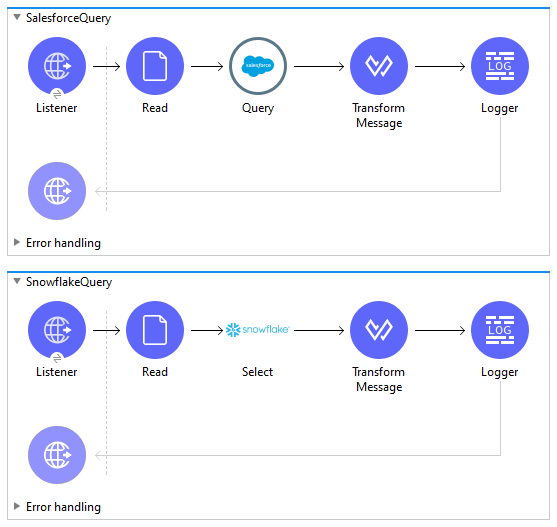

In this blog, we will see how we can dynamically read a query from a SOQL/SQL file in Mulesoft and execute it in Salesforce and Snowflake, and return the result in JSON format.
Why read a query from a file?
Any changes made in the query do not affect the application and we do not have to redeploy the application. On the other hand, if we specify the query in the query connector directly we would have to redeploy each time we have a change in the query.
Setting up tables in Salesforce and Snowflake.
Salesforce
- Login to your Salesforce Account.
- Select App Manager from Home -> Platform Tools -> Apps -> Apps Manager.
- Select New Lightning App.
- Give App name and Developer name to the app and click next.
- Click Next.
- Click Next.
- In Navigation Items, select create -> custom object from a spreadsheet.
- Login to the new window and select one of the three options.
- Once the file is uploaded it will prompt the object description. Click next and give the label and API name and select Finish.
- Now back to the previous window. Click refresh next to create.
- Select the object you made.
- Click next. Select who has access to the app.
- Click Save & Finish.
Snowflake
- Login to your Snowflake Account.
- Create a new Database or select a database.
- Create a new Schema.
- Create a table according to your requirement.
- Test your table in the worksheet. (Optional)
Creating the Mulesoft Application
- Create a new Mule Project.
- Create two new Flows.
- Add an http listener to each flow. Setup the HTTP config and give the path to them.
- Now, create a folder name Files in src/resources/main. Create two files named input_salesforce.soql and input_snowflake.sql.
- Put the select query of salesforce in input_salesforce.soql file and snowflake query in input_snowflake.sql file.
- Add a file, salesforce, and snowflake connector to the project from Mule Palette. If any of the connectors is not present import it from the exchange.
- Add a read file connector to both the flows.
- Setup File Config and set the workingDir to the Files directory we created in step 4.
File Read Connector:
File Configuration:
- Now, add a Transform Message like below.
- Now, add a Salesforce Query Connector to the salesforce flow. In input parameter specify "query": payload and specify SQL query as :query and configure the salesforce config.
Query Connector:
Salesforce Configuration:
- Now, add a Snowflake Select Connector to the snowflake flow. Specify SQL query as #[payload] and configure the snowflake config.
Select Query Connector:
Snowflake Configuration:
- Add another transform message to both the flows to convert the java output to JSON.
- Add a logger to Log the payload.
- Run the Application.
Mule Flows:

View Code